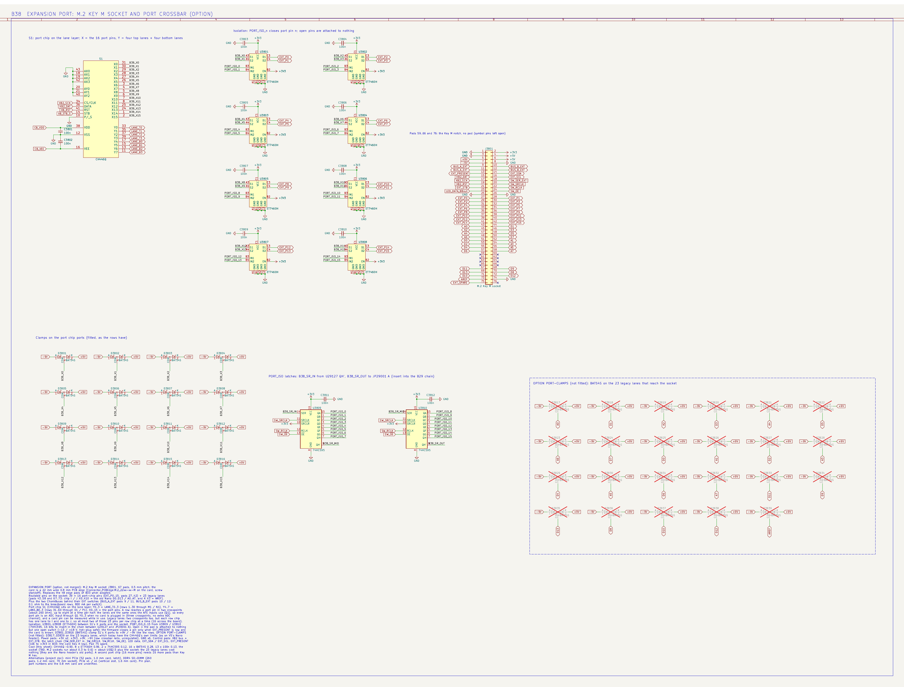

V6: ChonkBus current sense, always-on voltage sense, expansion port, cost cuts
2026-10-29, later the same day as the ChonkBus install; §1.5 and §1.6 added 2026-10-30 after a second, wider part search and Kevin's rule "save ADC pins; super accuracy isn't necessary; the RP2350's ADC pins are there too". Answers to: a cheap current-sense part that takes negative common mode; "or just ADCs on a shunt?"; the 470 Ω INA219 trick; the TFT decision and the cost explorer; whether the parts fit on one board; where to cut cost; more isolation on the extension port; which mass-produced card-edge connector; how many routable external pins the crossbar can give. Prices are LCSC unit prices read today (ladder nearest 1k) unless marked est. The interactive version of the cost numbers is the Jumperless V6 Cost Explorer.
0. Bottom line
- Current sense (revised 2026-10-30, §1.5): a $0.15 ordinary shunt amplifier run with the −9 V rail as its ground. An INA181-footprint part (3PEAK TP181 $0.15, Gainsil GS199 $0.07, TI INA199 $0.23 — all SC-70-6, pin-compatible) has a −0.3…+26 V common-mode window relative to its own GND pin; put that pin on −9V, its supply pin on +3V3 (12.3 V, inside its 2.7–26 V rating) and its REF pin on +1.65 V, and the window becomes −9.3…+17 V absolute with the output already centred on the ADC's mid-scale. Vos 100 µV = 2–4 mA on a 25–50 mΩ shunt, one ADC pin, no exotic part, and it degrades to a normal ground-referenced amplifier if the ±9 V rails are off. The −13 V corner (an external supply below −9 V pushed onto a closed shunt) is covered by the same BAT54S clamps the rows have plus a firmware refusal, or by the premium version of the same circuit, INA296A1 floated the same way ($1.69): −14…+101 V absolute, Vos 20 µV, 1.1 MHz. The ground-referenced TSC2011 ($1.33, −20…+70 V) stays the fallback if you would rather not hang an amplifier on a switcher rail. Net cost change vs the INA219 as drawn: −$0.2 (TP181) / +$1.3 (INA296).
- ADC pins (§1.6): none dedicated. The 2026-10-27 pin plan assigns all 16 CH32 ADC_IN, and V5 uses all eight RP2350 ADC inputs. Everything slow — the current output, BUS_A / BUS_B voltage, rail monitors, a card-ID voltage — goes through one 8:1 mux (74HC4051, $0.08) into one 12-bit CH32 channel, with the mux selected by the latch chain's four spare bits. The fuse function parks the mux on the current channel. RP2350 ADC pins become usable only as their V5 duties move to the CH32.
- Your gut is right on both counts. Two routable ADC channels across a 0.1 Ω shunt give ±0.1 A at best (the Input A front ends attenuate 7:1 and their 1 % networks turn 9 V of common mode into 90 mV of difference). The 470 Ω that stopped the INA219 from dragging negative rows to ground on V5 works by starving its input clamp (18 mA at −9 V, still 3.6× the 5 mA absolute maximum — it survived, it was not in spec), and on a 0.1 Ω shunt the price is 10–13 mV of bias-current error, i.e. 100–130 mA. On V5's 2 Ω that same error was 5–6 mA, which is why it was fine there.
- Expansion port: an M.2 Key M socket is the pick for size and price ($0.23–0.40, 67 pads, 22 mm card), DDR4 SO-DIMM if you want 260 pads and a latching, laptop-style module ($0.56, 73 mm long). The option sheet
b38_expansiondraws the M.2 version with a sixth lane-layer CH446Q as a "port chip": 39 routable pins on the socket (16 isolated port-chip pins + the 23 legacy Nano lanes) plus the two ChonkBuses, every port-chip pin also an ADC input through the lane layer when no card drives it. Per-pin isolation (8 × ET7460H, 2 × 74HC595, 16 × BAT54S) is ≈ $1.45 and makes an open pin −13/+18 V tolerant and hot-plug safe. - One board. 9,100 mm² of courtyard on a 14,100 mm² outline used on both sides = 32 %; with the port electronics 34 %. That is a dense 6-layer board (WLCSP escapes), not a sandwich. A sandwich only pays if routing, not area, forces it.
- Cost cuts worth taking now (−$9 to −$12 of parts): TFT instead of AMOLED (−$4.9 to −$5.9 even with glass and touch), drop U4 (−$0.47), generic cable (−$2.08), 18 × MMC5603NJ instead of 9 × TMAG5273 (−$1.3, decided 2026-10-31), L272D → TCA0372 (−$1.08, pinout check). Worth a quote: LEDs and CH446Q factory-direct (−$3 and −$4 est). Not yet: PSRAM (firmware decides), nav stick (touch decides).
1. Current sense on the ChonkBus shunt
1.1 What the measurement has to do
The shunt sits between the two buses (BUS_A →SW→ shunt →SW→ BUS_B). Either bus can be at any source voltage (rails ±8 V, DAC ±8 V, GND, the extension port) or at whatever an external circuit on a member row puts there (−13…+18 V with ROW-ISO). Continuous current 0.8 A (switch limit), 2 A peaks. The uses: ammeter in series with a user's wire (row on A, row on B, shunt closed), supply current of a circuit powered from a rail through the bus, a software fuse (trip on overcurrent, open the row switches, ~10 µs), and the same for negative rails.
1.2 Gut checks
ADC on the shunt through the routable ADCs. The four AFE channels are Input A stages: 866k / 316k / 243k, Vadc = 0.137 Vin + 1.24 V, 12-bit over 3.3 V, so one LSB = 0.806 mV at the ADC = 5.9 mV at the row = 59 mA on 0.1 Ω, and a current is the difference of two such readings (two channels, or one channel sampled on both sides of the shunt one after the other). Worse is the common mode: the two channels' 1 % resistor networks differ in gain by up to 2 %, and with the bus at 9 V that is up to 180 mV of apparent difference = 1.8 A. Calibrating each channel against the DAC gets the mismatch to perhaps 0.1 % → 9 mV → 90 mA. Oversampling buys resolution but not this. So: ±0.1 A class, no better, and only while the bus is routed to two sensing lanes. It is still the right way to read the bus voltage on demand (through any member row), and the "always on" version of that is two dividers (below), not the crossbar.
INA219 with 470 Ω in the input leads (the V5 finding). The INA219's common-mode limit is −0.3 V absolute (IN+/IN− have ESD diodes to GND; the IN− pin also feeds the bus-voltage ADC through ~320 kΩ). With a row at −9 V and 10 Ω filters the clamp diode takes the current the source can give — on V5 that dragged the row toward 0 V, which is what you saw. 470 Ω limits it to (9 − 0.3 − 0.7) / 470 ≈ 18 mA (27 mA at −13 V); the datasheet's absolute maximum is 5 mA into any pin, so it survived at 3.6× the limit. To be in spec you would need ≥ 2.6 kΩ, and then the input bias current (20 µA typical per input, no maximum given) × 2.6 kΩ = 52 mV of offset = 0.5 A on 0.1 Ω. At 470 Ω the errors are: 20 µA × 470 Ω = 9.4 mV per side, cancelling only as far as the two bias currents match (datasheet gives no matching figure; expect a few mV → 20–50 mA); plus the IN− bus-voltage path, Vbus / 320 kΩ × 470 Ω = 13 mV at 9 V = 130 mA, linear in Vbus so the firmware can subtract most of it using the INA219's own bus-voltage register (320 kΩ is typical, so ~10 % remains → 13 mA). Result: ~±50 mA after calibration, no reading at all below 0 V, and the part out of spec whenever a bus is negative. On V5's 2 Ω shunt the same millivolts were 20× fewer milliamps, which is why 470 Ω was a good trade there. On the ChonkBus the INA219 is only usable with the firmware rule "shunt closed only while both buses ≥ 0 V" and 10 Ω filters (the shunt switches, open, keep negative buses away from it — that is how it is drawn today).
Hall / isolated / flying capacitor. A flying-cap sampler needs switches spanning the whole −13…+18 V (31 V) range: CD4053 covers 20 V, DG4xx-class or a floating supply costs more than the amplifier. Isolated ΔΣ modulators are multi-dollar. Hall sensors (Novosense NSM2016 class) have ±10 mV offset on 100 mV/A → ±100 mA. None of these beat a wide-CM difference amplifier.
1.3 Parts that take negative common mode (bidirectional)
Three families reach ≤ −10 V; no Chinese bidirectional part does (SGMICRO SGM845 −16 V and SGM8197 −24 V are unidirectional; 3PEAK, Novosense, Chipsea stop at −0.3…−4 V; TI INA240/241/296 at −4/−5 V; ADI AD8418/AD8210 at −2 V; INA226/228/229 confirmed −0.3 V).
| Part | CM operating | Gain | Vos max | Gain err | BW | Supply | Pkg | LCSC | $ ≈1k | Stock today |
|---|---|---|---|---|---|---|---|---|---|---|
| ST TSC2011IDT | −20…+70 V (abs −25…+76) | 60 | ±200 µV (CM 1 V) / ±500 µV (CM 12 V) | 0.3 % | 600 kHz | 2.7–5.5 V | SO-8 | C1857476 | 1.33 | 2,027 |
| ST TSC2010IST / IDT | same | 20 | same | 0.3 % | 650 kHz | 2.7–5.5 V | MiniSO-8 / SO-8 | C4371046 / C4370962 | 1.81 / 2.34 | 0 / 0 |
| ST TSC2012IDT | same | 100 | same | 0.3 % | 390 kHz | SO-8 | C1858311 | 2.22 | 4 | |
| Maxim MAX9920ASA+T | −20…+75 V | adjustable, min 7.5 (200 mV FS) | ±1.2 mV | ±1 % | 230 kHz | 4.5–5.5 V | SO-8-EP | C2059139 | 0.70 | 0 |
| Maxim MAX9918ASA/V+T | −20…+75 V | adjustable, min 30 | ±0.4 mV | ±0.6 % | 75 kHz | 4.5–5.5 V | SO-8-EP | C4371056 | 0.63 | 0 |
| ADI MAX49925XATB+ | −40…+76 V | 10/20/50/100 pin-set | 5 µV typ | ±0.3 % | 300 kHz | 2.7–5.5 V | TDFN-10 | C19193612 | 5.01 (ADI list 1.54) | 0 |
| TI LMP8601MAX | −22…+60 V at 5 V (−4…+27 V at 3.3 V) | 20 | ±1 mV | 0.5 % | 60 kHz | 5 V | SOIC-8 | C88027 | 2.80 | 58 |
| TI INA282AIDR | −14…+80 V | 50 | ±70 µV | ±1.4 % | 10 kHz | 2.7–18 V | SOIC-8 | C53319 | 3.14 | 2,581 |
Input bias (drawn from the bus): TSC201x 350 µA typ / 600 µA max at 12 V CM (its inputs are a ~34 kΩ resistor network, which is also why they survive ±76 V); MAX99xx ±175 µA; INA282 25 µA; INA219 20 µA.
Scaling on a 3.3 V 12-bit ADC (0.806 mV/LSB): 1 mA per LSB on 0.1 Ω needs gain ≥ 8.1; ±2 A on 0.1 Ω within ±1.65 V needs gain ≤ 8.25 — gain 8 is the one-size answer, and only MAX9920 / MAX49925 can be set there. With fixed gains the shunt sets the range: TSC2011 (×60) gives ±27.5 mV of input, i.e. ±1.1 A on 25 mΩ at 0.54 mA/LSB, or ±0.83 A on 33 mΩ at 0.4 mA/LSB; TSC2010 (×20) gives ±0.82 A on 0.1 Ω at 0.4 mA/LSB. 2 A peaks clip (no damage); 0.8 A is the switch limit anyway. A 25 mΩ shunt also takes 75 mΩ out of the bus path (two switches 0.2 Ω + shunt).
Discrete 4-resistor difference amplifier on ±9 V (OPA2171 / TLV2171 $0.17–0.36, or LM358 $0.04, plus 8 × 0.1 % 0402 at $0.018 — UNI-ROYAL TC0250B1002TCC C517449 in stock): +18 V of common mode exceeds what an op amp on ±9 V can see, so the first stage has to attenuate (G ≈ 0.5) and a second stage gain ×40 follows; four unselected 0.1 % resistors give a worst-case CMRR of 20·log[(1+G)/(4·Kr)] = 51 dB (ADI MT-068), so 18 V of CM appears as 48 mV input-referred = 0.48 A on 0.1 Ω. It is linear in Vcm and can be subtracted in software from the measured bus voltage, leaving the resistor TCR mismatch (50 ppm/°C × 20 °C → the same magnitude again unless the parts track). About $0.35 and two op amps for ±50 mA-class accuracy after a per-board calibration. Integrated unity-gain difference amps (INA132 $1.42, AD8276 $2.42) do not cover −13…+18 V on ±9 V rails either.
1.4 First-pass recommendation (2026-10-29; superseded by §1.5 for the part, still valid for the dividers and the firmware)
- U: TSC2011IDT (SO-8; MPN for the alternate: MAX9920ASA+T if it becomes stocked — different pinout, not a shared footprint). VCC = +3V3 (the analog 3V3 if there is one), 100 nF. REF1 = VCC, REF2 = GND → output centred at VCC/2 = 1.65 V with no reference. OUT → a CH32 ADC pin (
CB_ISENSE), 100 Ω + 1 nF at the pin. Inputs straight to the shunt pads (Kelvin), 10 Ω + 10 Ω + 1 nF differential filter is fine; nothing bigger (the input network is ~34 kΩ, so 470 Ω would already be 1.4 % of gain error). - Shunt: 25 mΩ 1 % 1206 1 W (Milliohm HoYLR1206-1W series $0.03–0.05; 25 mΩ exists in the same family as the 100 mΩ C5375407) → ±1.1 A, 0.54 mA/LSB, 20 mA zero error before the one-point calibration (Vos 0.5 mV at CM 12 V), ~6 mA CM-dependent residual (CMRR 102 dB min). 0.8 A² × 25 mΩ = 16 mW.
- Always-on voltage sense (your ask): two dividers BUS_A / BUS_B → CH32 ADC pins, the Input A values (866k / 316k to +3V3A / 243k: Vadc = 0.137 Vbus + 1.24 V, window −9…+15 V; or 1 M / 243k for −13…+18 V at the cost of the top of the range) — $0.04, 3 pins total with the current output. This is what makes the bus manager able to check a bus is where it should be before closing a shunt or a second source, and it reads the bus while a row is externally powered, which the crossbar path cannot do without routing a lane.
- Drop: INA219 U29102 and its 10 Ω / 100 nF (−$0.47), and U4 on R57 (−$0.47, the bus shunt covers DAC 0 current). Net change ≈ +$0.90 with the voltage dividers.
- Firmware: no polarity interlock needed for the shunt; keep the source interlock (hardware) and the "both buses ≥ 0 V" rule only if the INA219 stays. Zero-current calibration: read
CB_ISENSEwith the shunt switch open (the TSC's input network parks both inputs near 0 V, so this is a CM ≈ 0 zero; the CM-dependent part is ≤ 6 mA). - Pins: 3 CH32 analog inputs (1 if you keep the INA219 and add only the dividers' worth of information through it — it already reports V(BUS_B)). Check
V6_pin_budget_and_io_cellsbefore committing; the I2C address 0x44 frees up.
Not drawn in the schematic yet: say the word and it becomes OPTION WIDE-CM-SENSE on b29_busends (TSC2011 + 25 mΩ, dividers, the INA219 moved to the option), one merge + install.
1.5 Second pass (2026-10-30): the floated-ground trick, and everything else that was checked
Why the first pass came up short. Every bidirectional shunt amplifier specifies its common-mode window relative to its own GND pin, and the cheap ones (INA181/INA199 class, $0.07–0.25) have −0.3…+26 V. Nothing says that GND pin has to be the board's ground. Power the amplifier between −9V (its GND) and +3V3 (its V+) — a 12.3 V supply, inside the 2.7–26 V (TP181: 2.7–30 V) rating — and the window is −9.3…+17 V absolute; the input abs-max becomes −9.3…+17 V (the datasheets add "may exceed if the pin current is limited to 5 mA"). Its REF pin takes 0…V+ relative, i.e. −9…+3.3 V absolute, so REF = +1.65 V from a 10k/10k divider off +3V3 puts the zero-current output exactly at the ADC's mid-scale with no level-shift network at all; the transfer function Vout = REF + G·Vsense does not care where the supply sits. Positive swing reaches V+ − 0.05…0.2 V = 3.1 V; negative over-range heads toward −9 V, so the ADC pin gets 2.2 kΩ in series and a BAT54S to GND / +3V3 (4 mA worst case). Quiescent current (0.1–3 mA) flows from +3V3 into the −9 V rail, which is a sink anyway. When the TPS65131 rails are off, the amplifier's GND node sits at 0 V and it becomes a normal 3.3 V, −0.3…+26 V part — graceful. In the +14.3/−4.3 V rail mode the supply is 7.6 V and the floor −4.6 V, which is where the row clamps are in that mode too.
Verified against the datasheets by the second search (all stocked at LCSC, prices at the ladder nearest 1k, 2026-10-30):
| Part (SC-70-6 unless noted) | Supply | CM rel. → absolute when floated | Gains | Vos max → mA at 25 mΩ | IB | LCSC | $ |
|---|---|---|---|---|---|---|---|
| 3PEAK TP181A1/A2/A3 | 2.7–30 V (abs 42) | −0.3…+36 → −9.3…+27 V | 50/100/200 (check: the INA181-compatible suffixes may be 20/50/100/200) | 100 µV → 4 mA | 35 µA | C2902349 / 50 / 51 | 0.151 @3k, 28k stock |
| Gainsil GS199B / A | 2.7–30 V | −0.3…+30 → −9.3…+21 V | 50/100/200 | 200 µV → 8 mA | 35 µA | C52211845 / C49326088 | 0.074 / 0.148 @3k |
| TI INA199A1/A2/A3 | 2.7–26 V | −0.3…+26 → −9.3…+17 V | 50/100/200 | 150 µV → 6 mA | 28 µA | C59135 / C131913 / C132098 | 0.226 / 0.165 / 0.31 |
| TI INA210–215, onsemi NCS199/NCS21x, Runic RS199 ($0.10), AiP8199 ($0.19), ZXCT199, Linearin LT199, SGM8199 | 2.2–28 V | same −0.3…+26…30 V class | 50…1000 | 35–350 µV | various | 0.10–0.9 | |
| TI INA296A1…A5 (SOT-23-8) | 2.7–20 V | −5…+110 → −14…+101 V (abs −20/+120 rel.) | 10/20/50/100/200 | A1 20 µV → 0.8 mA; A3 10 µV | 35 µA | A1 C7472493, A3 C19712055 | 1.69 / 1.75, 1.7k / 2.9k stock |
| TI INA241A (INA296 + PWM rejection) | 2.7–20 V | −5…+110 → −14…+101 V | 10…200 | 10 µV | 35 µA | C6051860 | 2.15 |
| 3PEAK TPA1295 (SOP-8, REF1/REF2) | 3–18 V | −0.1…+70 → −9.1…+61 V | 20/50/100 | 100 µV | 12 µA | C5334227 | 0.94, 94 stock |
Not floatable (5.5 V supply max): INA180/181/185/186/190, INA253/254, LMP8601–3, TSC2010/11/12, CSA240, MAX40056. Only the INA296/INA241 window actually reaches the −13 V extreme; the 26–36 V-class parts stop at −9.3 V and rely on the clamps and the firmware for the last 4 V.
What else was checked, so it need not be checked again: - TI INA270/INA271 (−16…+80 V, $1.50–1.80): unidirectional — the "extra" pins are a filter tap, not a REF — and the INA19x front end has a 3 mV offset bump at low Vsense with negative CM (datasheet §8.4.2.3). The same applies to INA193–198, INA200–208, ST TSC200. Rejected. - TI INA2290 (floor = its own supply), INA293/280/281/310 (−4 V, unidirectional), INA253/254 (−4 V, 5.5 V supply); ADI AD8216/8417/8410/8205/8206/8207 (−2…−4 V), AD8203 (−6 V, no stock). Nothing at −10 V. - Difference amplifiers on ±9 V as a front end + ×30 stage: INA592 at G = ½ is the credible one (CM −27…+27 V, Vos 80 µV RTI = 3 mA, CMRR 88 dB min → 12 mA typical / 49 mA worst over 31 V of CM, 9 kΩ input load, $2.44); INA597 the same at $2.19 with Vos 16 mA; INA149 (±275 V, 200 kΩ inputs, Vos 44 mA, $2.14); AD8278 at G = ½ (CMRR 74–80 dB → 124–250 mA, $3.01); INA148 / AD628 / AD629 / LT1990 at 70–77 dB CMRR → 175–390 mA; LT6375 (94 dB, 20 mA) no stock. The ×30 stage could be one of the CH32H417's three internal OPAs (they have PGA), but that spends two analog pins, so it buys nothing here. - Isolated: TI AMC3302 ($2.27, own DC/DC, ±50 mV input, Vos 50 µV = 2 mA, 8 µV rms RTI noise) solves the problem outright but draws 27 mA and is a SOIC-16W. AMC3301 (±250 mV) $2.29. - Hall / GMR: ACS712 ($0.72; ±1.5 % total error, zero drift 1.4 mA/°C, 19 mA rms raw at 2 kHz, 3 mA rms at 100 Hz of averaging), CC6920 ($0.87; ±112 mA offset), CC6905 ($0.45; ±120 mV offset drift over temperature), CH70105 (ACS724 clone, $1.04, ±15–25 mA offset, 1.5 mA rms at 100 Hz), TMCS1100A4 ($2.52, ±5–48 mA offset), ACS71240 ($1.47, ±73–114 mA), NSM2012/2015/2016 (±20 A ranges, 8 mA per LSB). Every Hall part is 150–340 µA/√Hz, i.e. ~1 s of averaging to get under 1 mA rms, with zero offsets 10–110 mA and drifts 0.07–1.4 mA/°C — one to two orders worse than any shunt amplifier. The one exception, Allegro's GMR ACS70331 (8 µA/√Hz, ±17 mA offset, $2.19), is marked pre-end-of-life. Hall is the answer only if ±50 mA is fine; for a breadboard ammeter it is not. - Maxim MAX9918 is stocked again at $2.18 (90 pcs); MAX9920 $0.70 still 0; MAX49925 0. An LCSC sweep of all 2,238 current-sense-amplifier SKUs found no other bidirectional part with a floor below −6 V (analogysemi CSA240, an INA240 clone, is the −6 V one: 5.5 V supply, not floatable).
Revised recommendation. Fit the INA181/INA199 footprint (SC-70-6) floated on −9V with REF = +1.65 V, and buy TP181 (or GS199 / INA199 — same pins): $0.15, one ADC channel through the housekeeping mux (§1.6), CM −9.3…+27 V absolute, Vos 100 µV. Shunt 25 mΩ with gain 50 (±1.32 A full scale, 0.64 mA per 12-bit LSB) or 50 mΩ with gain 20 if that suffix exists (±1.65 A, 0.8 mA/LSB). Inputs: 100 Ω each (no more — the input network is 5–20 kΩ) and a BAT54S pair to +9V/−9V per input, exactly a row's clamp, so a −13 V excursion costs the −9 V rail a few mA instead of the amplifier its life. Firmware: refuse to close the shunt while either bus reads below −9 V on the always-on dividers; zero-calibrate with the shunt open. The −9 V rail's ripple and setting are irrelevant to the reading (PSRR, and Vout = REF + G·Vsense). If the first boards show it mattering, the upgrade is the INA296A1 in the same place with a different footprint (SOT-23-8): −14…+101 V absolute, 20 µV, no clamps needed, $1.69. The TSC2011 is the plan B that needs none of the floating (ground-referenced 3.3 V supply, −20…+70 V, $1.33, G = 60 → 25 mΩ). Drop the INA219 (U29102) and U4 in all three cases.
1.6 ADC pins: the housekeeping mux
Rule from Kevin: save ADC pins; most of this does not need accuracy; use the CH32's inputs where it matters and the RP2350's where it does not. Facts: the CH32H417 has 16 ADC_IN (two 12-bit, 5 Msps converters) + 7 HSADC_IN (10-bit, 20 Msps) + 3 internal OPAs with PGA; the 2026-10-27 pin plan assigns every one of them (4 AFE, 9 lane taps, VBUS, 2 DACs; HSADC: 2 fast taps, 1 eight-way IO-cell readback mux, 4 shared with the AFE). The RP2350B's eight ADC inputs all have V5 jobs (ADC_BUFFERED ±8 V ×4, 5 V channel, probe ±8 V, probe sense, supply sense) and free up only as those move to the CH32.
So nothing slow gets its own pin. One 74HC4051 (8:1, $0.08) on one 12-bit CH32 channel — the obvious donor is CH_ADC_IN15 (PC5, lane tap FL in the plan) or VBUS_SENSE's PC4, with VBUS moving onto the mux — carries:
| Mux input | Signal | Scaling | Why |
|---|---|---|---|
| 0 | ChonkBus current (the floated amplifier's output) | 0…3.3 V, zero at 1.65 V | parked here while a software fuse is armed |
| 1, 2 | BUS_A, BUS_B voltage | Input-A divider 0.137·V + 1.24 V (−9…+15 V) or 1 M / 243k for −13…+18 V | the bus manager checks a bus before closing a source, a shunt or a port pin; reads an externally powered bus |
| 3 | VBUS (USB) | the existing divider | frees PC4 if wanted |
| 4, 5 | +9V / −9V rail monitors | dividers to the 0–3.3 V window | the rails are programmable; the clamps' limits follow them |
| 6 | expansion-card ID (resistor code on a socket pad) | identifies the card before the port's power switch closes | |
| 7 | spare / board temperature near the ET7460H field |
Select lines: the three spare bits of latch chip 25 (plus the fourth as enable), so no GPIO; a channel change is one chain update (20 µs) and the mux is static during a measurement. The 74HC4051 passes 0–3.3 V when run from +3V3 with VEE = GND, which is all these signals are after scaling; 100 Ω + 1 nF at the ADC pin. The same mux pattern is already in the plan for the eight IO-cell readbacks (HSADC_IN4). If a second slow channel group appears later (eight card pins to read, say), it is another $0.08, not another pin. Cost: $0.08 + ~$0.10 of dividers; ADC pins for all sensing: one.
2. Display, area, one board or two
- Display: TFT ($2.60 sample price) with optional CTP (+$1.00) and fitted cover glass (+$0.60 + $400 tooling) is in the explorer; against the AMOLED at $8.49 it saves $4.9 to $5.9 per unit. The display block passives stay (+$0.07).
- Area (
v6gen/area.py, footprint courtyards from the BOM at 1k,docs/V6_area.json): main-board fitted parts 9,134 mm² of courtyard (B29 1,805 incl. ROW-ISO 511; B30 1,136; B32 1,112; V5 parts 3,785; B28 edge mates 1,950 counted but partly off-board). Biggest: 17 × CH446Q 3,053 mm², 25 × TSSOP-16 1,059, 60 × BAT54S 787, 97 × ET7460H 356. On the V5 outline (170.5 × 82.6 = 14,083 mm²) populated both sides that is 32 % (34 % with the port chip, its isolation and an M.2 socket; 44 % with a SO-DIMM socket's 1,715 mm²). Rule of thumb: past ~45 % of the two-sided area a board like this (WLCSP-12 at 0.4 mm, 0.5 mm LQFP-44 ×17) stops routing; 32 % is a 6-layer board with the ET7460H and 74HC595 on the back. Sandwich: not for area. The reason to add a second PCB would be routing the 60 rows × (CH446Q + clamp + switch + lane) fan-out, or keeping the 480-LED wig separate, which it already is. - Placements: 808 main + 617 wig at the V5 rate ($0.0127) = $18.1 of assembly; ROW-ISO adds 16 net placements ($0.20).
3. Cost cuts (parts at 1k; toggles in the explorer)
| Cut | Saving | Risk / condition |
|---|---|---|
| TFT instead of AMOLED (with glass + CTP) | −4.9 | decided; sample prices |
| TFT, no touch, no glass | −5.9 | |
| Drop U4 (INA219 on R57) | −0.47 | the bus shunt reads DAC 0 current; U3 stays |
| Generic cable instead of the pink one | −2.08 | |
| Magnetometers: 18 × MMC5603NJ ($0.15, C404328) + 3 × 74LVC138 + 2.2 µF instead of 9 × TMAG5273 ($4.43) | −1.3 | decided 2026-10-31 (the MMC array, per the WigLEDmag note); 32 sensors would be +$2.1 |
| L272D ×2 → TCA0372 | −1.08 | pinout / output stage check; the DAC buffers drive the ChonkBus sources |
| LEDs factory-direct (CNY 0.08–0.11) | −3.0 est | needs a quote; 480 pcs/board |
| CH446Q direct from WCH (−$0.25 × 17) | −4.25 est | quote; 17 per board |
| HASL where no exposed pads | −0.4 est | the breadboard pads and card-edge fingers need ENIG anyway |
| Drop the PSRAM | −1.42 | firmware |
| Drop the nav stick (touch display instead) | −2.34 | UX |
| Floated TP181 shunt amplifier + clamps + bus dividers + housekeeping mux instead of the INA219 | −0.1 | §1.5–1.6 (INA296 version: +1.4; TSC2011: +1.0) |
| Port chip + isolation + M.2 socket | +2.60 | §4 |
Spring clips are in the parts total: 80 × Fulimei Spring Clip6 at $0.0599 (the 2026-06-17 proforma invoice gave the 10k sample run the 100k-run price; phosphor bronze, 6 holes, one tab) = $4.79 per unit, plus the $2,686 tooling already paid, amortised in the mechanics line. The count is an input in the explorer (80; 160 for a double-width board).
Baseline in the explorer since 2026-10-31 (the "Reset to baseline" button restores it; the page remembers your own selections in the browser): TFT + touch, no glass; ROW-ISO fitted; floated TP181 sense on the housekeeping mux with the bus dividers; M.2 Key M socket, one port chip, per-pin isolation; 18 × MMC5603NJ; 80 clips; U4 dropped; generic cable. That baseline is $77.3 of parts, ≈ $124.5 ex-works and ≈ $157 landed at 1k, 37 % margin at $339 via Crowd Supply.
Where the money really is (parts $60.64 main + $18.62 wig = $79.26 + ~$2 unpriced, ROW-ISO fitted, before the MMC and TFT changes): 17 × CH446Q $15.30, 97 × ET7460H $11.64, 480 LEDs $9.02, display $8.49 → $2.60, 80 clips $4.79, 9 × TMAG5273 $4.43, CH32H417 $3.30 est, 25 × 74HC595 $1.52. The ChonkBus (B29, $15.44) is the single largest new block; its price is the ET7460H's, and the DIO1327H second source is the lever there.
4. Expansion port
4.1 Connector survey (LCSC, 2026-10-29)
| Family | Pads | Pitch | Card | A/pin | Host footprint | Retention | Part (LCSC) | ≈1k | Pads/$ |
|---|---|---|---|---|---|---|---|---|---|
| M.2 Key M | 67 | 0.5 | 0.8 mm, 22 mm wide | 0.5 | 22 × 6.6–8.7 mm + standoff | 1 screw | Lotes APCI0079-P002A H3.2 (C841651) / XKB X1302WVS-67CM H4.2 (C30167366) / JAE SM3ZS067U310 (C4527433) | 0.23 / 0.40 / 0.48 | 287 / 167 |
| M.2 Key B / E | 67 | 0.5 | 0.8 | 0.5 | same | 1 screw | Lotes APCI0105 (C841658) / APCI0108 (C841659) | 0.20 / 0.25 | 337 / 272 |
| M.2 Key G (custom key, no commercial card fits) | 67 | 0.5 | 0.8 | 0.5 | same | 1 screw | Lotes APCI0093-P009A (C841660) | 0.96 | 70 |
| mini PCIe | 52 | 0.8 | 1.0 mm, 30 mm wide | 0.5 (Molex 1.1) | 31.5 × 6 mm + 2 latch posts | 2 latches / screws | SOFNG PCIE-52P52H (C444927) / Argosy MPCET-S5201 (C367017) | 0.32 / 0.22 | 162 / 235 |
| PCIe x1 | 36 | 1.0 | 1.57 mm | 1.1 | 25 × 8.8 × 11.25 mm, vertical | none | UMAX 3183-10110P1T TH (C404109) | 0.37 | 98 |
| PCIe x4 | 64 | 1.0 | 1.57 | 1.1 | 39 × 8.8 mm, vertical | none | XKB X1618WVS-64 SMD (C21263104) | 1.29 | 50 |
| DDR4 SO-DIMM | 260 | 0.5 | 1.2 mm, 69.6 mm wide | 0.5 | 73 × 23.5 mm (latches), 4.0–9.2 mm high | built-in latches | Lotes ADDR0205-P001A 4.0H (C962124) / UMAX D4260 (C52720623) / Foxconn AS0A821 (C2832345) | 0.56 / 0.66 / 0.70 | 462 |
| DDR3 SO-DIMM | 204 | 0.6 | 1.0 | 0.5 | 72–77 × 26 mm | latches | Foxconn AS0A621-H8RN-7H (C2891520) | 1.07 | 191 |
| DDR2 SO-DIMM (Pi CM3) | 200 | 0.6 | 1.0 | 0.5 | ~72 × 26 | latches | TE 1565917-4 (C279171) | 3.98 | 50 |
Who uses what: Pi CM1/3 DDR2 SO-DIMM (15 µin hard gold), Jetson / LattePanda Mu / Sipeed LM4A DDR4 SO-DIMM 260, SparkFun MicroMod M.2 Key E (22 × 22 mm, offset screw hole so real Wi-Fi cards cannot be fastened), Pi M.2 HAT+ Key M.
Gotchas that matter here:
- Any real card fits a standard key. A Key M socket takes NVMe SSDs; our pin plan puts +5 V and ±9 V on pads where an SSD expects 3.3 V, PCIe lanes or N/C. Either take the Key G socket (+$0.73, no commercial card has that notch), or the MicroMod trick (offset standoff) plus a firmware gate: the +5 V / +3V3 pads behind a load switch (CH217S, $0.08) that closes only after EXT_PRESENT is low and the card has identified itself on EXT_SDA/SCL (a 24C02 or a resistor code). The second is cheaper and also protects a half-inserted Jumperless card.
- Gold fingers at JLCPCB: ENIG required (HASL gives tin fingers), 30° bevel (M.2 asks 20°, works in practice), the board or panel must be ≥ 50 mm both ways (a 22 × 30 mm card gets panelised), no chamfer on V-cut panels, no hard-gold option (PCBWay does 3–50 µin). Durability: cheap M.2 sockets are rated 25 cycles (Lotes P001A, 1–3 µin flash) to 60 (JAE, TE); SO-DIMM 25–60; PCIe 50 with 30 µin gold.
- Thickness: M.2 0.8 ± 0.08 mm vs JLC ±0.1 mm below 1.0 mm — marginal but the whole SSD market lives with it; mini PCIe / DDR3 1.0 mm and DDR4 1.2 mm are comfortable; PCIe 1.57 mm is the ordinary board.
- Current: 0.5 A per pad on M.2 and SO-DIMM → two pads per ChonkBus (as B33 has) and per 5 V; PCIe and Molex mini PCIe give 1.1 A.
- Height: M.2 sockets come in 2.3 / 3.2 / 4.2 mm stacks; a card lies parallel to the board, inside the shell's footprint, which is why M.2 and mini PCIe suit a Jumperless-shaped box and a vertical PCIe slot does not.
4.2 The sheet: b38_expansion (option, not merged)

v6gen/out/options/b38_expansion.kicad_sch (click for full size).v6gen/blocks/b38_expansion.py → v6gen/out/options/b38_expansion.{kicad_sch,png} (A1, 63 parts). What it draws:
- J3801 M.2 Key M socket, stock footprint
Connector_PCBEdge:TE_M.2_M_2x38-1MP_P0.5mm(TE 2199230 family; the Lotes/XKB parts share the SMT pattern but check the hold-downs), symbolConn_02x38_Odd_Even; pads 59–66 and 76 are the key notch (no pad). Pin plan: 1/3/8/25/26/74 GND; 2 +3V3; 4, 6 +5V; 5 +9V; 7 −9V; 9/11 BUS_A_EXT, 10/12 BUS_B_EXT; 13 EXT_PRESENT; 14/16 EXT_SDA/SCL; 15/17/19/21 XB2_DAT/SCK/RST, EXT_STB; 18/20/22/24 SW_SER_EXT, SW_SRCLK, SW_RCLK, SW_OE; 23 LED_DATA_BBout; 27–42 EXT_P0..15 (isolated port-chip pins); 43–58, 67–73 the 23 legacy lanes (chip I/J X0..X10 = Nano D0–D13/A0–A7, chip K X3 = AREF); 75 spare. That is B33's 48-pad list plus 16 new pins and three more grounds, in 67 pads: the socket replaces the edge pads. - S1, a sixth CH446Q on the lane layer: Y0..3 =
LANE_T0..3(rows 1–30 via M1/N1), Y4..7 =LANE_B0..3(rows 31–60 via O1/P1), X0..15 = the port pins; XB2 bus, strobeXB_STB_S= B30's decoder Y5 (a test point today; one label move in B30 when merged). Same drawing as M1..Q1 (serial address mode, CB_VDD/CB_VEE with 100 nF). - U3801–U3808 ET7460H between S1's X ports and the socket (
PORT_ISO_0..15from U3809/U3810 74HC595, 16 bits to splice into the B29 chain between U29127 and JP29001 A, so the chain becomes 216 bits). Open = the pad is attached to one open switch and nothing else: −13/+18 V, hot-plug safe, no clamp current. The firmware closes a pin only afterEXT_PRESENTand the card ID. - D3801–D3816 BAT54S on S1's X ports to +9V/−9V (fitted, the rows' convention) and OPTION PORT-CLAMPS D3817–D3839 on the 23 legacy lanes (not fitted; today those have only the CH446Q's own limits, as V5's Nano header does).
- Cost of the sheet: CH446Q 0.90, 8 × ET7460H 0.96, 2 × 74HC595 0.12, 16 × BAT54S 0.28, 13 × 100n 0.13, socket 0.23–0.96 → ≈ $2.4–3.3; the 23 legacy lanes cost nothing (they are the old Nano ports).
4.3 Routing: how many pins, how many at once
| Path | Pins on the socket | Crosspoints from a row | Simultaneous limit | ADC access |
|---|---|---|---|---|
| Port chip S1 (new) | 16 | 2 (row → lane on M1..P1, lane → pin on S1), ~260 Ω | 4 per half-board (the four lanes of that half), shared with the AFE sensing channels on the same lanes | yes: a port pin reaches Q1 → AFE0..3 through its lane (3 crosspoints), so an unused pin is an ADC input, and a pin in use can be measured — without any extra ADC channel |
| Legacy Nano lanes (chips I, J, K) | 23 | 2 (row chip → V5 lane → I/J X port), ~260 Ω | one I lane and one J lane per row chip (8 row chips → up to 16 of the 23 at once) | through the main crossbar as on V5 |
| ChonkBus A / B | 2 × 2 pads | 2 switches (0.2 Ω) + the EXT switch | both | TSC/INA219 shunt, dividers |
| Fixed | +5 V ×2, +3V3, ±9 V, 6 × GND, 12 control | |||
| Total | 67 = 39 routable + 4 bus + 24 infrastructure |
The lane-sharing limit is the real design constraint: on one half of the board, port pins in use + AFE channels in use ≤ 4. If that bites, the second port chip should not go on the lanes (that doubles the pins but not the lanes) — it would need its own four-lane set, and every X port of M1..P1 is already a row or a rail. A SO-DIMM's 260 pads do not change that arithmetic; the crossbar does.
4.4 Isolation tiers for the port
| Tier | What | Cost | What it buys |
|---|---|---|---|
| 0 (today) | legacy lanes straight from CH446Q I/J/K | 0 | V5 behaviour: ±9 V rails + the chip's own ESD; a 12 V card kills a lane chip |
| 0+ | OPTION PORT-CLAMPS, BAT54S on the 23 legacy lanes | 0.40 | clamps to ±9 V like the rows (200 mA peak per diode) |
| 1 (drawn) | 8 × ET7460H + 2 × 74HC595 on the 16 port-chip pins | 1.45 | open pins −13/+18 V, hot-plug, no leakage into an unknown card; the only tier that lets a card carry its own supply |
| 2 (not drawn) | 100 Ω + TVS per pin, or a load switch on +5 V / +3V3 | 0.10–0.30 | protects against a wrong card being plugged in; the series R costs 100 Ω of path |
| — | Key G socket | +0.73 | nothing electrical; it stops a real SSD from fitting |
Recommendation: tier 1 as drawn on the 16 new pins, the +5 V / +3V3 load switch (tier 2, $0.08 + a bit), clamps on the legacy lanes as an option, Key M socket with the firmware gate; Key G if you would rather spend $0.73 than explain to someone why their SSD died.
5. Open items
- Current sense: TP181 gain suffixes (the datasheet's A1/A2/A3 = 50/100/200 per the LCSC listing; confirm against the PDF) and its REF-pin input impedance (a 10k/10k divider assumes it is high); the INA296 SOT-23-8 pinout as the upgrade footprint; the 25 mΩ shunt part number; which CH32 channel donates to the housekeeping mux; the dividers' top-of-range choice (−9…+15 V or −13…+18 V); not drawn yet.
- Port: connector family (M.2 Key M vs SO-DIMM vs mini PCIe); the pin plan is a proposal; the TE footprint's hold-down pads vs the Lotes/XKB bodies; card thickness 0.8 mm; the chain splice point (216 bits) and the B30 strobe label; the AFE/port lane-sharing rule in the router.
- Area: courtyard sums, not a layout; the 45 % rule is a rule of thumb.
- Prices: LCSC ladders of 2026-10-29; MAX9918/9920 prices are unverifiable while out of stock.
6. Sources
Second pass (2026-10-30): TI INA199 https://www.ti.com/lit/ds/symlink/ina199.pdf · INA210 https://www.ti.com/lit/ds/symlink/ina210.pdf · INA296A https://www.ti.com/lit/ds/symlink/ina296a.pdf · INA241A https://www.ti.com/lit/ds/symlink/ina241a.pdf · INA270 https://www.ti.com/lit/ds/symlink/ina270.pdf · INA310A https://www.ti.com/lit/ds/symlink/ina310a.pdf · INA592 https://www.ti.com/lit/ds/symlink/ina592.pdf · INA597 https://www.ti.com/lit/ds/symlink/ina597.pdf · INA149 https://www.ti.com/lit/ds/symlink/ina149.pdf · AMC3302 https://www.ti.com/lit/ds/symlink/amc3302.pdf · TMCS1100 https://www.ti.com/lit/ds/symlink/tmcs1100.pdf · 3PEAK TP181 https://datasheet.lcsc.com/datasheet/pdf/46eaa834d745f364863406138f4ea7ca.pdf · Gainsil GS199 https://datasheet.lcsc.com/datasheet/pdf/145a972fcea784a9b7022c64a292d174.pdf · 3PEAK TPA1295 https://datasheet.lcsc.com/datasheet/pdf/6292db54c36d9fdded00bf1326605f72.pdf · ADI AD8278 https://www.analog.com/media/en/technical-documentation/data-sheets/AD8278_8279.pdf · AD628 https://www.analog.com/media/en/technical-documentation/data-sheets/AD628.pdf · LT6375 https://www.analog.com/media/en/technical-documentation/data-sheets/6375fa.pdf · Allegro ACS712 https://www.allegromicro.com/-/media/files/datasheets/acs712-datasheet.pdf · ACS70331 https://www.allegromicro.com/-/media/files/datasheets/acs70331-datasheet.pdf · Cross Chip CC6920 https://datasheet.lcsc.com/datasheet/pdf/6efc9035028bd754ead53aa4b178dc49.pdf · CH32H417 datasheet (LCSC copy, V1.8) https://atta.szlcsc.com/upload/public/pdf/source/20260518/A332D0233125C0DE3BEB32D7A2C6A50E.pdf · Nexperia 74HC4051 https://assets.nexperia.com/documents/data-sheet/74HC_HCT4051.pdf · LCSC product pages C2902349, C52211845, C59135, C7472493, C19712055, C6051860, C5334227, C2155711, C4370836, C4990160, C44471, C2760487, C459300, C2841849, C2057750.
First pass (2026-10-29): TSC201x datasheet (ST, via Farnell) https://www.farnell.com/datasheets/3107356.pdf · MAX9918/19/20 datasheet https://www.analog.com/media/en/technical-documentation/data-sheets/MAX9918-MAX9920.pdf · MAX49925 https://www.analog.com/en/products/max49925.html · LMP8601 https://www.ti.com/product/lmp8601 · INA282 https://www.ti.com/lit/ds/symlink/ina282.pdf · INA219 SBOS448G https://www.ti.com/lit/ds/symlink/ina219.pdf (bias 20 µA typ, CM −0.3…+26 V, 5 mA into any pin, 10 Ω filter advice) · INA226/228/229 datasheets (CM −0.3 V floor) · ADI MT-068 difference-amplifier CMRR https://www.analog.com/media/en/training-seminars/tutorials/MT-068.pdf · LCSC product pages: C1857476, C4371046, C2059139, C4371056, C517449, C5375407, C841651, C841658, C841659, C841660, C30167366, C4527433, C444927, C367017, C404109, C21263104, C962124, C52720623, C2832345, C2891520, C279171 · M.2 (Wikipedia) https://en.wikipedia.org/wiki/M.2 · Lotes APCI0146 drawing https://datasheet.lcsc.com/datasheet/pdf/d9a7e04a776403cf4d42eee8c9288c34.pdf?productCode=C841645 · Lotes ADDR0205 drawing https://datasheet.lcsc.com/datasheet/pdf/93c1f83a833ca3d92b72d0545149276e.pdf?productCode=C962124 · JLCPCB gold fingers https://jlcpcb.com/help/article/jlcpcb-gold-fingers and capabilities https://jlcpcb.com/capabilities/pcb-capabilities · PCBWay gold fingers https://www.pcbway.com/pcb_prototype/PCB_Gold_fingers.html · AISLER on low-cost M.2 boards https://community.aisler.net/t/low-cost-m-2-boards-for-makers/5362 · LattePanda Mu edge-connector guide https://docs.lattepanda.com/content/mu_edition/design_guide_edge_connector/ · Pi CM3+ datasheet https://datasheets.raspberrypi.com/cm/cm3-plus-datasheet.pdf · SparkFun MicroMod https://learn.sparkfun.com/tutorials/getting-started-with-micromod/hardware-overview · TE 2199230-4 https://www.te.com/en/product-2199230-4.html · FCI mini PCIe https://mouser.com/pdfdocs/FCIMiniPCIeConnectorsDatasheet.PDF · Molex 67910 https://media.e-sonic.com/productfiles/mf-mol/0679105700_edge_card_connecto.pdf
Jumperless V6 design notes, written with Claude; published 31 October 2026. Prices are LCSC unit prices on the date each section states. Nothing here is a datasheet; follow the links for those.